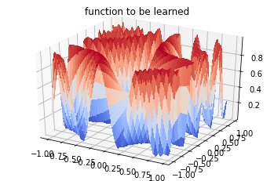
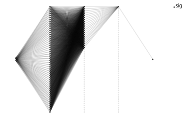
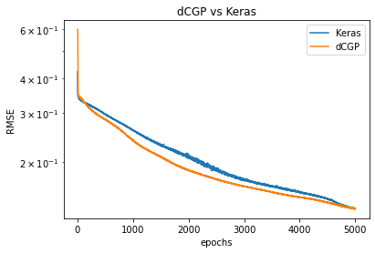
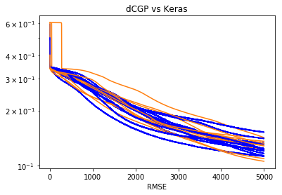

Training a FFNN in dCGPANN vs. Keras (regression)¶
A Feed Forward Neural network is a widely used ANN model for regression and classification. Here we show how to encode it into a dCGPANN and train it with stochastic gradient descent on a regression task. To check the correctness of the result we perform the same training using the widely used Keras Deep Learning toolbox.
[1]:
# Initial import
import dcgpy
# For plotting
from mpl_toolkits.mplot3d import Axes3D
import matplotlib.pyplot as plt
from matplotlib import cm
from matplotlib.ticker import LinearLocator, FormatStrFormatter
# For scientific computing and more ...
import numpy as np
from tqdm import tqdm
from sklearn.utils import shuffle
%matplotlib inline
Data set¶
[2]:
# To plot the unction we use a uniform grid
X = np.arange(-1, 1, 0.05)
Y = np.arange(-1, 1, 0.05)
n_samples = len(X) * len(Y)
points = np.zeros((n_samples, 2))
i=0
for x in X:
for y in Y:
points[i][0] = x
points[i][1] = y
i=i+1
labels = (np.sin(5 * points[:,0] * (3 * points[:,1] + 1.)) + 1. ) / 2.
points = points.reshape((n_samples,2))
labels = labels.reshape((n_samples,1))
# To plot the function
X, Y = np.meshgrid(X, Y)
Z = (np.sin(5 * X * (3 * Y + 1.)) + 1. ) / 2.
fig = plt.figure()
ax = fig.gca(projection='3d')
surf = ax.plot_surface(X, Y, Z, cmap=cm.coolwarm,
linewidth=0, antialiased=False)
# We shuffle the points and labels
points, labels = shuffle(points, labels, random_state=0)
# We create training and test sets
X_train = points[:800]
Y_train = labels[:800]
X_test = points[800:]
Y_test = labels[800:]
_ = plt.title("function to be learned")

Encoding and training a FFNN using dCGP¶
There are many ways the same FFNN could be encoded into a CGP chromosome. The utility encode_ffnn selects one for you returning the expression.
[3]:
# We define a 2 input 1 output dCGPANN with sigmoid nonlinearities
dcgpann = dcgpy.encode_ffnn(2,1,[50,20],["sig", "sig", "sig"], 5)
std = 1.5
# Weight/biases initialization is made using a normal distribution
dcgpann.randomise_weights(mean = 0., std = std)
dcgpann.randomise_biases(mean = 0., std = std)
# We show the initial MSE
print("Starting error:", dcgpann.loss(X_test,Y_test, "MSE"))
print("Net complexity (number of active weights):", dcgpann.n_active_weights())
print("Net complexity (number of unique active weights):", dcgpann.n_active_weights(unique=True))
print("Net complexity (number of active nodes):", len(dcgpann.get_active_nodes()))
x = dcgpann.get()
w = dcgpann.get_weights()
b = dcgpann.get_biases()
res = []
# And show a visualization of the FFNN encoded in a CGP
dcgpann.visualize(show_nonlinearities=True)
Starting error: 0.3763343357065135
Net complexity (number of active weights): 1120
Net complexity (number of unique active weights): 1120
Net complexity (number of active nodes): 73
[3]:
<matplotlib.axes._subplots.AxesSubplot at 0x7f9d8f34dd30>

[4]:
import timeit
start_time = timeit.default_timer()
lr0 = 0.3
for i in tqdm(range(5000)):
lr = lr0 #* np.exp(-0.0001 * i)
loss = dcgpann.sgd(X_train, Y_train, lr, 32, "MSE", parallel = 4)
res.append(loss)
elapsed = timeit.default_timer() - start_time
# Print the time taken to train and the final result on the test set
print("Time (s): ", elapsed)
print("End MSE: ", dcgpann.loss(X_test,Y_test, "MSE"))
100%|██████████| 5000/5000 [00:36<00:00, 136.65it/s]
Time (s): 36.5959761259146
End MSE: 0.014714415025762751
Same training is done using Keras (Tensor Flow backend)¶
[5]:
import keras
Using TensorFlow backend.
[6]:
from keras.models import Sequential
from keras.layers import Dense, Activation
from keras import optimizers
# We define Stochastic Gradient Descent as an optimizer
sgd = optimizers.SGD(lr=0.3)
# We define weight initializetion
initializerw = keras.initializers.RandomNormal(mean=0.0, stddev=std, seed=None)
initializerb = keras.initializers.RandomNormal(mean=0.0, stddev=std, seed=None)
model = Sequential([
Dense(50, input_dim=2, kernel_initializer=initializerw, bias_initializer=initializerb),
Activation('sigmoid'),
Dense(20, kernel_initializer=initializerw, bias_initializer=initializerb),
Activation('sigmoid'),
Dense(1, kernel_initializer=initializerw, bias_initializer=initializerb),
Activation('sigmoid'),
])
[7]:
# For a mean squared error regression problem
model.compile(optimizer=sgd,
loss='mse')
[8]:
# Train the model, iterating on the data in batches of 32 samples
start_time = timeit.default_timer()
history = model.fit(X_train, Y_train, epochs=5000, batch_size=32, verbose=False)
elapsed = timeit.default_timer() - start_time
[9]:
# Print the time taken to train and the final result on the test set
print("Time (s): ", elapsed)
print("End MSE: ", model.evaluate(X_train, Y_train))
Time (s): 95.618946922943
800/800 [==============================] - 0s 42us/step
End MSE: 0.023254886977374555
[10]:
# We plot for comparison the MSE during learning in the two cases
plt.semilogy(np.sqrt(history.history['loss']), label='Keras')
plt.semilogy(np.sqrt(res), label='dCGP')
plt.title('dCGP vs Keras')
plt.xlabel('epochs')
plt.legend()
_ = plt.xlabel('RMSE')

Repeating ten times the same comparison¶
[12]:
epochs = 5000
for i in range(10):
# dCGP
dcgpann = dcgpy.encode_ffnn(2,1,[50,20],["sig", "sig", "sig"], 5)
dcgpann.randomise_weights(mean = 0., std = std)
dcgpann.randomise_biases(mean = 0., std = std)
res = []
for i in tqdm(range(epochs)):
lr = lr0 #* np.exp(-0.0001 * i)
loss = dcgpann.sgd(X_train, Y_train, lr, 32, "MSE", parallel = 4)
res.append(loss)
# Keras
model = Sequential([
Dense(50, input_dim=2, kernel_initializer=initializerw, bias_initializer=initializerb),
Activation('sigmoid'),
Dense(20, kernel_initializer=initializerw, bias_initializer=initializerb),
Activation('sigmoid'),
Dense(1, kernel_initializer=initializerw, bias_initializer=initializerb),
Activation('sigmoid'),
])
model.compile(optimizer=sgd, loss='mse')
history = model.fit(X_train, Y_train, epochs=epochs, batch_size=32, verbose=False)
plt.semilogy(np.sqrt(history.history['loss']), color = 'b')
plt.semilogy(np.sqrt(res), color = 'C1')
plt.title('dCGP vs Keras')
plt.xlabel('epochs')
_ = plt.xlabel('RMSE')
100%|██████████| 5000/5000 [00:30<00:00, 163.77it/s]
100%|██████████| 5000/5000 [00:22<00:00, 218.28it/s]
100%|██████████| 5000/5000 [00:33<00:00, 148.84it/s]
100%|██████████| 5000/5000 [00:27<00:00, 181.35it/s]
100%|██████████| 5000/5000 [00:22<00:00, 218.70it/s]
100%|██████████| 5000/5000 [00:26<00:00, 186.03it/s]
100%|██████████| 5000/5000 [00:28<00:00, 177.42it/s]
100%|██████████| 5000/5000 [00:23<00:00, 209.11it/s]
100%|██████████| 5000/5000 [00:23<00:00, 212.32it/s]
100%|██████████| 5000/5000 [00:25<00:00, 195.39it/s]

[ ]: